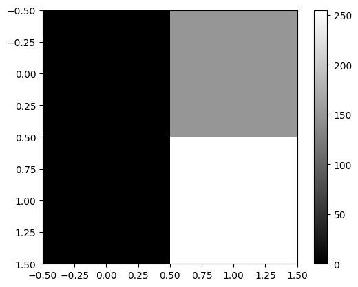
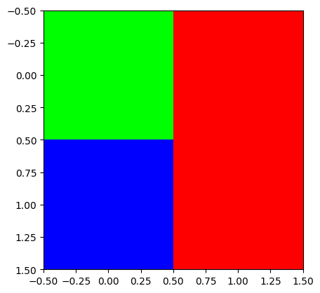
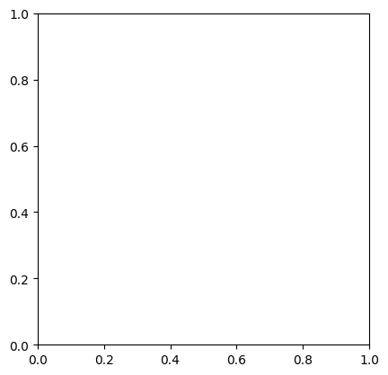
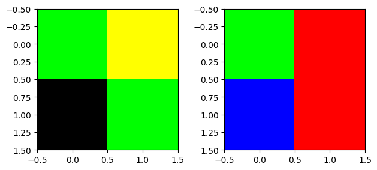
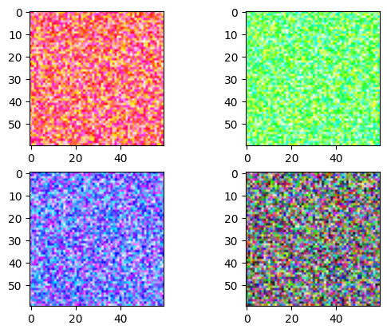

import matplotlib.pyplot as plt
import numpy as np
import torch
import imageio
import IPython.display06wk-1, 07wk-1: UCF101 영상자료 분류

1. 강의영상
2. ref
ref: https://huggingface.co/docs/transformers/tasks/video_classification
- 실행이 되지 않음

- 해결방법:
- 위의 그림에서
/usr/local/lib/python3.10/dist-packages/pytorchvideo/transforms/augmentations.py를 클릭 - 아래의 그림과 같이 코드를 수정

3. 예비학습
A. 이미지 자료의 이해
- plt.imshow(...) 에서 ... 자리에 오는 numpy array의 shape이 (??,??) 와 같이 2차원 꼴이면 흑백이미지를 출력
np.array([[0, 150], [0,255]])array([[ 0, 150],
[ 0, 255]])plt.imshow(np.array([[0, 150], [0,255]]),cmap='gray')
plt.colorbar()
- plt.imshow(...) 에서 ... 자리에 오는 numpy array의 shape이 (??,??,3) 이러한 형태이면 칼라이미지를 출력
R = np.array([[0,255],
[0,255]])
G = np.array([[255,0],
[0, 0]])
B = np.array([[0, 0],
[255,0]])
plt.imshow(np.stack([R,G,B],axis=-1))
- plt.imshow(...)에서 ... 자리에 오는 numpy array 의 dtype이 int인지 float인지에 따라서 시각화 결과가 다름
- int일 경우: 0을 최소값, 255를 최대값으로 생각하고 그림을 그려줌.
- float일 경우: 0.0을 최소값, 1.0을 최대값으로 생각하고 그림을 그려줌.
R = np.array([[0,1],
[0,1]])
G = np.array([[1,0],
[0,0]])
B = np.array([[0,0],
[1,0]])
#plt.imshow(np.stack([R,G,B],axis=-1))
plt.imshow(np.stack([R,G,B],axis=-1).astype(float))
B. tsr.permute()
- 실수로 R,G,B 를 이상한 방식으로 stack 했다고 가정하자.
R = np.array([[0,255],[0,255]])
G = np.array([[255,0],[0,0]])
B = np.array([[0,0],[255,0]])
# img = np.stack([R,G,B],axis=-1) # <-- 원래는 이걸 하려고 했었음..
img = np.stack([R,G,B]) # <-- 실수로 이렇게 만들었다고 하자...
img.shape(3, 2, 2)- 차원이 맞지 않아서 plt.imshow(img)이 동작하지 않음. 동작하기 위해서는 plt.imshow(...) 에서 ... 자리에 있는 numpy array가 HWC 와 같은 형식으로 되어야함. (그런데 지금은 CHW 임)
plt.imshow(img)TypeError: Invalid shape (3, 2, 2) for image data
- 에러를 피하기 위해서는 차원을 (3,2,2) 에서 (2,2,3) 으로 바꾸어야함.
img.reshape(2,2,3)array([[[ 0, 255, 0],
[255, 255, 0]],
[[ 0, 0, 0],
[ 0, 255, 0]]])plt.imshow(img.reshape(2,2,3)) # ?? 이상한 그림이 나왔음- 우리가 원하는 그림은 아니네??
- 왜 이런일이 생기는가??
- 이미지자료의 차원을 바꾸고 싶다면 reshape을 쓰지 말고 np.transpose를 이용하라
img.reshape(2,2,3), np.transpose(img,(1,2,0))(array([[[ 0, 255, 0],
[255, 255, 0]],
[[ 0, 0, 0],
[ 0, 255, 0]]]),
array([[[ 0, 255, 0],
[255, 0, 0]],
[[ 0, 0, 255],
[255, 0, 0]]]))- 위의 두개의 array는 차원이 같음. \(\to\) 그림자체는 둘다 그려짐
- 그렇지만 같은 array는 아님 \(\to\) 당연히 그림도 달라짐
fig, ax = plt.subplots(1,2)
ax[0].imshow(img.reshape(2,2,3))
ax[1].imshow(np.transpose(img, (1,2,0)))
fig.tight_layout()
- 왼쪽은 이상한 그림, 오른쪽은 우리가 원하는 그림
- numpy array 가 아니고 pytorch tensor 일 경우에는 아래의 방법으로 변환
arr = np.random.rand(2,4,3)
tsr = torch.tensor(arr)np.transpose(arr,(2,0,1)) # (2,4,3) --> (3,2,4)array([[[0.91648551, 0.14451989, 0.12429414, 0.08726179],
[0.68349001, 0.67635927, 0.80430196, 0.02365825]],
[[0.18466195, 0.4075408 , 0.17702914, 0.1660341 ],
[0.01750461, 0.07114555, 0.16904054, 0.91556281]],
[[0.45540234, 0.53803747, 0.56285487, 0.01249792],
[0.0097584 , 0.6514433 , 0.93219221, 0.95797311]]])tsr.permute(2,0,1) # (2,4,3) --> (3,2,4)
# np.transpose(tsr,(2,0,1)) # 같은코드tensor([[[0.9165, 0.1445, 0.1243, 0.0873],
[0.6835, 0.6764, 0.8043, 0.0237]],
[[0.1847, 0.4075, 0.1770, 0.1660],
[0.0175, 0.0711, 0.1690, 0.9156]],
[[0.4554, 0.5380, 0.5629, 0.0125],
[0.0098, 0.6514, 0.9322, 0.9580]]], dtype=torch.float64)C. 동영상 자료 이해
- 동영상자료 = 여러사진들의 모음 = [사진1, 사진2, 사진3, 사진4, ….]
np.random.seed(43052)
v = (np.random.rand(4,60,60,3)*255).astype("uint8")
v[0,:,:,0] = 255 # 첫번쨰 프레임의 R 채널을 모두 최대치로 설정
v[1,:,:,1] = 255 # 두번쨰 프레임의 G 채널을 모두 최대치로 설정
v[2,:,:,2] = 255 # 세번째 프레임의 B 채널을 모두 최대치로 설정fig, ax = plt.subplots(2,2)
# ax[0][0].imshow(v[0,:,:,:])
# ax[0][1].imshow(v[1,:,:,:])
# ax[1][0].imshow(v[2,:,:,:])
# ax[1][1].imshow(v[3,:,:,:])
ax[0][0].imshow(v[0])
ax[0][1].imshow(v[1])
ax[1][0].imshow(v[2])
ax[1][1].imshow(v[3])
frames = [frame for frame in v]
#frames = [사진1, 사진2, 사진3, 사진4]imageio.mimsave("sample.gif",frames)#IPython.display.Image("sample.gif")D. np.clip()
arr = np.array([[300, -20, 150], [400, 100, 0], [255, 500, -100]])
arrarray([[ 300, -20, 150],
[ 400, 100, 0],
[ 255, 500, -100]])np.clip(arr,0,255)array([[255, 0, 150],
[255, 100, 0],
[255, 255, 0]])4. 살펴보기
A. 다운로드
- imports
import huggingface_hub- 처음에는 /root/.cache 에 huggingface라는 폴더가 존재하지 않음
file_path = huggingface_hub.hf_hub_download(
repo_id="sayakpaul/ucf101-subset",
filename="UCF101_subset.tar.gz",
repo_type="dataset"
)file_path'/root/.cache/huggingface/hub/datasets--sayakpaul--ucf101-subset/snapshots/b9984b8d2a95e4a1879e1b071e9433858d0bc24a/UCF101_subset.tar.gz'- 위의명령어를 실행하면 /root/.cache 에 적당한 폴더가 만들어지고 UCF101_subset.tar.gz 와 같은 파일이 다운로드 되어있음
- huggingface_hub.hf_hub_download 함수의 역할: (1) UCF101_subset.tar.gz 파일을 다운로드 (2) 다운로드한 압축파일의 경로를 str으로 리턴
B. 압축풀기
- imports
import tarfile- 아래의 코드는 현재폴더에 UCF101_subset.tar.gz 파일의 압축을 해제하는 코드이다.
# file_path는 다운로드한 압축파일이 존재하는 경로와 파일명이 string으로 저장되어있음.
with tarfile.open(file_path) as t:
t.extractall(".") # 여기에서 "."은 현재폴더라는 의미- tarfile.TarFile의 인스턴스 t 가 가지는 주요기능
t = tarfile.open(file_path)
t.extractall("./asdf")- tarfile.TarFile의 인스턴스 t가 가지는 덜 중요한 기능: 더 이상 압축을 풀고 싶지 않을때, t.close()를 이용하여 t.extractall()을 봉인할 수 있다.
t = tarfile.open(file_path) # t 오브젝트 생성
t.closed # 오브젝트 생성 직후에는 t.closed 는 FalseFalset.extractall("./여기에")t.extractall("./저기에")t.close() # 더이상 무분별하게 압축을 풀고싶지 않다면 이걸 실행t.closed # 그렇다면 t.closed 가 True로 되고Truet.extractall("./또풀어") # 에러발생OSError: TarFile is closed- tarfile.TarFile의 인스턴스 t가 가지는 덜 중요한 기능2: t._check() 은 t.closed = True일때 실행하면 에러를 발생시키는 역할을 한다.
print(t.closed)
t._check() # t.closed 가 open 일 경우에는 에러XFalset.close()
print(t.closed)
t._check() # t.closed 가 open 일 경우에는 에러XTrueOSError: TarFile is closed- with의 이해
아래와 같은 코드를 작성하고 싶음
1. `t`를 만듦. 즉 `TarFile`의 인스턴스를 만듦.
2. `t`가 열린상태인지 체크 (=압축풀기가 가능한 상태인지 체크를 해줌, 닫힌상태라면 에러메시지 발생하고 진행중지)
3. 압축해제
4. `t`를 닫힌상태로 만듦.아래와 같이 쓸 수 있음
t = tarfile.open(file_path)
t._check()
t.extractall(".")
t.close()위의 코드는 아래의 코드와 같은 효과
with tarfile.open(file_path) as t:
## 시작코드 -- t._ckech() 이 자동실행 (사실은 t.__enter__()이 실행)
t.extractall(".") ## 본코드
## 마무리코드 -- t.close() 이 자동실행 (사실은 t.__exit__()이 실행)t.closed # 예쁘게 잘 닫혀있음..True
Note
with ... as ???:에서 ??? 자리에 들어가는 오브젝트는 __enter__()와 __exit__()라는 숨겨진 메서드를 가진 오브젝트여야 한다.
import tarfile
# tar 파일을 열고 자동으로 닫아주는 with 문 사용
with tarfile.open('example.tar.gz') as tar: # tarfile 객체는 __enter__, __exit__ 메서드를 가짐
tar.extractall(path='output_folder') # 본래 코드: tar 파일 안의 파일들을 추출
# 여기서 `tar.__exit__()`가 호출되어 tar 파일이 자동으로 닫힘위의 예시에서 tarfile.open()이 반환하는 tar 오브젝트가 __enter__()와 __exit__() 를 가지고 있다. 위의 코드가 실행되는 원리는 대략적으로 아래와 같다.
with 문이 실행되면, 먼저
tar.__enter__()가 호출된다. 이 메서드는 tar 파일을 열고, 파일을 처리할 준비를 한다.tarfile.open('example.tar.gz') # 이 때 tar.__enter__() 호출본래 코드 실행: 이후 with 문 안의 본래 코드, 즉
tar.extractall(path='output_folder')가 실행되어 tar 파일의 내용을 추출한다.tar.extractall(path='output_folder') # 본래 코드 실행with 문이 종료될 때,
tar.__exit__()메서드가 호출되어 tar 파일이 자동으로 닫힌다. 이로 인해 파일을 명시적으로 닫을 필요가 없어지며, 자원 관리가 안전하게 이루어진다.# with 문 종료 시 tar.__exit__() 호출
이렇게 with 문은 __enter__()와 __exit__() 메서드를 가진 객체를 활용하여, 자원의 열림과 닫힘을 자동으로 처리하는 구조이다.
C. 동영상확인
- 코덱문제로 인하여 v_Basketball_g01_c01.avi는 재생이 안됨
- 아래의 명령어를 사용하여 v_Basketball_g01_c01.avi 파일을 output_video.mp4 로 변환
!ffmpeg -i UCF101_subset/train/Basketball/v_Basketball_g01_c01.avi -vcodec libx264 -acodec aac output_video.mp4 -y- output_video.mp4 를 다운로드하고 재생
D. 동영상 불러오기
- imports
import pytorchvideo.data
# import os
# import pathlib#. 동영상(avi) \(\to\) 텐서
_train_dataset = pytorchvideo.data.labeled_video_dataset(
data_path = 'UCF101_subset/train',
clip_sampler = pytorchvideo.data.make_clip_sampler("random", 10),
decode_audio = False,
# transform = train_transform,
)video_cthw = next(_train_dataset)['video']
video_cthw.shapetorch.Size([3, 141, 240, 320])# 텐서 \(\to\) 동영상
- 차원변환
video_thwc = video_cthw.permute(1,2,3,0)
video_thwc.shapetorch.Size([141, 240, 320, 3])plt.imshow(video_thwc[-1].numpy().astype('uint8'))- gif 만들기
frames = [frame.numpy().astype('uint8') for frame in video_thwc]
imageio.mimsave("sample.gif",frames)IPython.display.Image("sample.gif")<IPython.core.display.Image object>- “텐서 \(\to\) 영상” 이 되는 함수를 선언하자.
def _display_gif(video_cthw):
video_thwc = video_cthw.permute(1,2,3,0)
frames = [frame.numpy().astype('uint8') for frame in video_thwc]
imageio.mimsave("sample.gif",frames)
return IPython.display.Image("sample.gif")_display_gif(next(_train_dataset)['video'])<IPython.core.display.Image object>- pytorchvideo.data.make_clip_sampler("random", 10) 의 의미: 영상을 보고 스스로 파악해보세요..
pytorchvideo.data.make_clip_sampler("uniform", 10)의 의미도 스스로 살펴보세요
_train_dataset = pytorchvideo.data.labeled_video_dataset(
data_path = 'UCF101_subset/train',
clip_sampler = pytorchvideo.data.make_clip_sampler("random", 1),
decode_audio = False,
# transform = train_transform,
)
_display_gif(next(_train_dataset)['video'])<IPython.core.display.Image object>E. 모델생성
- imports
import transformers- 모델생성
label2id = {
'ApplyEyeMakeup': 0,
'ApplyLipstick': 1,
'Archery': 2,
'BabyCrawling': 3,
'BalanceBeam': 4,
'BandMarching': 5,
'BaseballPitch': 6,
'Basketball': 7,
'BasketballDunk': 8,
'BenchPress': 9
}
id2label = {
0: 'ApplyEyeMakeup',
1: 'ApplyLipstick',
2: 'Archery',
3: 'BabyCrawling',
4: 'BalanceBeam',
5: 'BandMarching',
6: 'BaseballPitch',
7: 'Basketball',
8: 'BasketballDunk',
9: 'BenchPress'
}
model = transformers.VideoMAEForVideoClassification.from_pretrained(
"MCG-NJU/videomae-base",
label2id=label2id,
id2label=id2label,
ignore_mismatched_sizes=True, # provide this in case you're planning to fine-tune an already fine-tuned checkpoint
)Some weights of VideoMAEForVideoClassification were not initialized from the model checkpoint at MCG-NJU/videomae-base and are newly initialized: ['classifier.bias', 'classifier.weight']
You should probably TRAIN this model on a down-stream task to be able to use it for predictions and inference.F. 변환 \(\to\) tr/val/test 생성
- imports
import pytorchvideo.transforms
import torchvision.transforms- 이미지전처리에 도움이 되는 image_processor 를 불러오는 코드
image_processor = transformers.VideoMAEImageProcessor.from_pretrained("MCG-NJU/videomae-base")- 저장된값들
print(
f"mean: {image_processor.image_mean}\n"
f"std: {image_processor.image_std}\n"
f"size: {image_processor.size}\n"
f"resize_to: {(224,224)}\n"
f"num_frames_to_sample: {model.config.num_frames}\n"
f"clip_duration: {2.1333333333333333}"
)mean: [0.485, 0.456, 0.406]
std: [0.229, 0.224, 0.225]
size: {'shortest_edge': 224}
resize_to: (224, 224)
num_frames_to_sample: 16
clip_duration: 2.1333333333333333- 모델
MCG-NJU/videomae-base의 성능을 최고로 이끌어 내기 위해서는 어떠한 최적화된 변환이 있음 - 위에 제시된 값들은 그 최적화된 변환을 구현하기위해 필요한 값들임.
- 변환된 이미지텐서를 올바르게 출력하기 위해 _display_gif 를 수정하여 display_gif 를 만듦.
def display_gif(video_cthw):
mean = [0.485, 0.456, 0.406]
std = [0.229, 0.224, 0.225]
#---#
video_thwc = video_cthw.permute(1,2,3,0)
frames = []
for frame in video_thwc:
img = frame = frame.numpy()
img = (img * std) + mean
img = (img * 255).astype('uint8')
img = img.clip(0,255)
frames.append(img)
imageio.mimsave("sample.gif",frames, duration=0.25)
return IPython.display.Image("sample.gif") - 최적화된 변환을 적용하여 train_dataset을 불러옴
train_dataset = pytorchvideo.data.labeled_video_dataset(
data_path = 'UCF101_subset/train',
clip_sampler = pytorchvideo.data.make_clip_sampler("random", 2.1333333333333333),
decode_audio = False,
transform = pytorchvideo.transforms.ApplyTransformToKey(
key="video",
transform=torchvision.transforms.Compose(
[
pytorchvideo.transforms.UniformTemporalSubsample(16),
torchvision.transforms.Lambda(lambda x: x / 255.0),
pytorchvideo.transforms.Normalize([0.485, 0.456, 0.406], [0.229, 0.224, 0.225]),
pytorchvideo.transforms.RandomShortSideScale(min_size=256, max_size=320),
torchvision.transforms.RandomCrop((224,224)),
torchvision.transforms.RandomHorizontalFlip(p=0.5),
]
),
)
)- 이제 val_dataset, test_dataset 도 불러옴
val_dataset = pytorchvideo.data.labeled_video_dataset(
data_path = 'UCF101_subset/val',
clip_sampler = pytorchvideo.data.make_clip_sampler("uniform", 2.1333333333333333),
decode_audio = False,
transform = pytorchvideo.transforms.ApplyTransformToKey(
key="video",
transform=torchvision.transforms.Compose(
[
pytorchvideo.transforms.UniformTemporalSubsample(16),
torchvision.transforms.Lambda(lambda x: x / 255.0),
pytorchvideo.transforms.Normalize([0.485, 0.456, 0.406], [0.229, 0.224, 0.225]),
torchvision.transforms.Resize((224,224))
]
),
)
)
test_dataset = pytorchvideo.data.labeled_video_dataset(
data_path = 'UCF101_subset/test',
clip_sampler = pytorchvideo.data.make_clip_sampler("uniform", 2.1333333333333333),
decode_audio = False,
transform = pytorchvideo.transforms.ApplyTransformToKey(
key="video",
transform=torchvision.transforms.Compose(
[
pytorchvideo.transforms.UniformTemporalSubsample(16),
torchvision.transforms.Lambda(lambda x: x / 255.0),
pytorchvideo.transforms.Normalize([0.485, 0.456, 0.406], [0.229, 0.224, 0.225]),
torchvision.transforms.Resize((224,224))
]
),
)
)G. 데이터콜렉터
- 일단은 아래가 실행되지 않음을 관찰하자.
model(train_dataset) AttributeError: 'LabeledVideoDataset' object has no attribute 'shape'- 실행되는 형태1: model(tsr_ntchw)
examples = [next(train_dataset), next(train_dataset)]실행예시1
model(examples[0]['video'].permute(1,0,2,3).reshape(1,16,3,224,224))ImageClassifierOutput(loss=None, logits=tensor([[-0.1585, 0.5085, 0.1967, -0.7588, 0.3329, -0.5446, 0.5754, -0.2992,
-1.0191, -0.4156]], grad_fn=<AddmmBackward0>), hidden_states=None, attentions=None)실행예시2
model(torch.stack([examples[0]['video'].permute(1,0,2,3), examples[1]['video'].permute(1,0,2,3)],axis=0))ImageClassifierOutput(loss=None, logits=tensor([[-0.1585, 0.5085, 0.1967, -0.7588, 0.3329, -0.5446, 0.5754, -0.2992,
-1.0191, -0.4156],
[-0.0798, 0.1997, 0.2231, -0.6410, 0.6482, -0.3275, 0.1121, -0.1804,
-0.4605, -0.3052]], grad_fn=<AddmmBackward0>), hidden_states=None, attentions=None)실행예시3
model(torch.stack([example['video'].permute(1,0,2,3) for example in examples],axis=0))ImageClassifierOutput(loss=None, logits=tensor([[-0.1585, 0.5085, 0.1967, -0.7588, 0.3329, -0.5446, 0.5754, -0.2992,
-1.0191, -0.4156],
[-0.0798, 0.1997, 0.2231, -0.6410, 0.6482, -0.3275, 0.1121, -0.1804,
-0.4605, -0.3052]], grad_fn=<AddmmBackward0>), hidden_states=None, attentions=None)- 실행되는 형태1: model(**{"pixel_values":tsr_ntchw, "labels":tsrlb_n})
examples = [next(train_dataset), next(train_dataset)]
tsr_ntchw = torch.stack([example['video'].permute(1,0,2,3) for example in examples])
tsrlb_n = torch.tensor([example['label'] for example in examples])model(**{"pixel_values":tsr_ntchw, "labels":tsrlb_n})ImageClassifierOutput(loss=tensor(2.3263, grad_fn=<NllLossBackward0>), logits=tensor([[-0.2561, 0.1628, 0.3724, -0.6019, 0.4608, -0.2620, 0.2757, -0.0861,
-0.4760, -0.1048],
[-0.1494, 0.0018, 0.2914, -0.1403, 0.1759, -0.3493, 0.5711, 0.1108,
-0.2272, -0.1822]], grad_fn=<AddmmBackward0>), hidden_states=None, attentions=None)- 그렇다면 데이터콜렉터는?
def collate_fn(examples): # examples 는 [Dict, Dict, ...]
tsr_ntchw = torch.stack([example['video'].permute(1,0,2,3) for example in examples])
tsrlb_n = torch.tensor([example['label'] for example in examples])
return dict(pixel_values=tsr_ntchw,labels=tsrlb_n)# model(**collate_fn(val_dataset)) # 좀 오래걸리니까 실행하지 마세요5. 코드정리
import huggingface_hub
import tarfile
import transformers
import pytorchvideo.data
import pytorchvideo.transforms
import torchvision.transforms
import evaluate
import torch
import numpy as np
# import imageio
# import IPython.display
# import matplotlib.pyplot as plt
#---#
## Step1
file_path = huggingface_hub.hf_hub_download(
repo_id="sayakpaul/ucf101-subset",
filename="UCF101_subset.tar.gz",
repo_type="dataset"
)
with tarfile.open(file_path) as t:
t.extractall(".")
train_dataset = pytorchvideo.data.labeled_video_dataset(
data_path = 'UCF101_subset/train',
clip_sampler = pytorchvideo.data.make_clip_sampler("random", 2.1333333333333333),
decode_audio = False,
transform = pytorchvideo.transforms.ApplyTransformToKey(
key="video",
transform=torchvision.transforms.Compose(
[
pytorchvideo.transforms.UniformTemporalSubsample(16),
torchvision.transforms.Lambda(lambda x: x / 255.0),
pytorchvideo.transforms.Normalize([0.485, 0.456, 0.406], [0.229, 0.224, 0.225]),
pytorchvideo.transforms.RandomShortSideScale(min_size=256, max_size=320),
torchvision.transforms.RandomCrop((224,224)),
torchvision.transforms.RandomHorizontalFlip(p=0.5),
]
),
)
)
val_dataset = pytorchvideo.data.labeled_video_dataset(
data_path = 'UCF101_subset/val',
clip_sampler = pytorchvideo.data.make_clip_sampler("uniform", 2.1333333333333333),
decode_audio = False,
transform = pytorchvideo.transforms.ApplyTransformToKey(
key="video",
transform=torchvision.transforms.Compose(
[
pytorchvideo.transforms.UniformTemporalSubsample(16),
torchvision.transforms.Lambda(lambda x: x / 255.0),
pytorchvideo.transforms.Normalize([0.485, 0.456, 0.406], [0.229, 0.224, 0.225]),
torchvision.transforms.Resize((224,224))
]
),
)
)
test_dataset = pytorchvideo.data.labeled_video_dataset(
data_path = 'UCF101_subset/test',
clip_sampler = pytorchvideo.data.make_clip_sampler("uniform", 2.1333333333333333),
decode_audio = False,
transform = pytorchvideo.transforms.ApplyTransformToKey(
key="video",
transform=torchvision.transforms.Compose(
[
pytorchvideo.transforms.UniformTemporalSubsample(16),
torchvision.transforms.Lambda(lambda x: x / 255.0),
pytorchvideo.transforms.Normalize([0.485, 0.456, 0.406], [0.229, 0.224, 0.225]),
torchvision.transforms.Resize((224,224))
]
),
)
)
## Step2
id2label = {
0: 'ApplyEyeMakeup',
1: 'Archery',
2: 'BalanceBeam',
3: 'BaseballPitch',
4: 'BasketballDunk',
5: 'ApplyLipstick',
6: 'BabyCrawling',
7: 'BandMarching',
8: 'Basketball',
9: 'BenchPress'
}
label2id = {
'ApplyEyeMakeup': 0,
'Archery': 1,
'BalanceBeam': 2,
'BaseballPitch': 3,
'BasketballDunk': 4,
'ApplyLipstick': 5,
'BabyCrawling': 6,
'BandMarching': 7,
'Basketball': 8,
'BenchPress': 9
}
model = transformers.VideoMAEForVideoClassification.from_pretrained(
"MCG-NJU/videomae-base",
label2id=label2id,
id2label=id2label,
ignore_mismatched_sizes=True, # provide this in case you're planning to fine-tune an already fine-tuned checkpoint
)
# Step3
metric = evaluate.load("accuracy")
def compute_metrics(eval_pred):
predictions = np.argmax(eval_pred.predictions, axis=1)
return metric.compute(predictions=predictions, references=eval_pred.label_ids)
def collate_fn(examples): # examples 는 [Dict, Dict, ...]
tsr_ntchw = torch.stack([example['video'].permute(1,0,2,3) for example in examples])
tsrlb_n = torch.tensor([example['label'] for example in examples])
return dict(pixel_values=tsr_ntchw,labels=tsrlb_n)
args = transformers.TrainingArguments(
'동영상분류학습된모델',
remove_unused_columns=False,
eval_strategy="epoch",
save_strategy="epoch",
learning_rate=5e-5,
per_device_train_batch_size=8,
per_device_eval_batch_size=8,
warmup_ratio=0.1,
logging_steps=10,
load_best_model_at_end=True,
metric_for_best_model="accuracy",
push_to_hub=False,
max_steps=(train_dataset.num_videos // 8) * 4,
report_to="none"
)
image_processor = transformers.VideoMAEImageProcessor.from_pretrained("MCG-NJU/videomae-base")
trainer = transformers.Trainer(
model,
args,
train_dataset=train_dataset,
eval_dataset=val_dataset,
tokenizer=image_processor,
compute_metrics=compute_metrics,
data_collator=collate_fn,
)
train_results = trainer.train()Some weights of VideoMAEForVideoClassification were not initialized from the model checkpoint at MCG-NJU/videomae-base and are newly initialized: ['classifier.bias', 'classifier.weight']
You should probably TRAIN this model on a down-stream task to be able to use it for predictions and inference.
max_steps is given, it will override any value given in num_train_epochs
[148/148 02:49, Epoch 3/9223372036854775807]
| Epoch | Training Loss | Validation Loss | Accuracy |
|---|---|---|---|
| 0 | 2.170500 | 2.039783 | 0.228571 |
| 1 | 1.126400 | 0.993775 | 0.571429 |
| 2 | 0.474000 | 0.654879 | 0.800000 |
| 3 | 0.305500 | 0.515028 | 0.857143 |
trainer.predict(test_dataset)PredictionOutput(predictions=array([[-1.3164852 , -1.0554788 , -1.2715465 , ..., -0.861506 ,
3.4951353 , -0.93868583],
[ 2.4491444 , 1.7958665 , -0.4800516 , ..., -0.53142333,
-1.1997489 , -0.4195877 ],
[ 2.4595702 , 1.7580072 , -0.41909498, ..., -0.5279662 ,
-1.2216586 , -0.41882777],
...,
[ 2.011366 , 2.1559622 , 0.37308124, ..., -0.17222637,
-1.9649202 , 0.03700109],
[-1.2129499 , -0.92986214, 0.17764184, ..., 2.3071375 ,
-1.2376754 , 0.4462242 ],
[-1.044006 , -1.0537918 , 1.2444943 , ..., 1.995246 ,
-1.2904724 , -0.3134354 ]], dtype=float32), label_ids=array([8, 0, 0, 3, 3, 7, 9, 3, 3, 3, 9, 9, 9, 8, 8, 3, 3, 3, 8, 8, 9, 9,
5, 5, 5, 5, 5, 5, 5, 0, 0, 5, 5, 5, 5, 4, 5, 5, 5, 5, 5, 6, 5, 5,
5, 5, 5, 5, 5, 5, 7, 6, 2, 2, 2, 9, 9, 9, 9, 9, 6, 7, 1, 1, 1, 9,
9, 2, 2, 6, 8, 6, 7, 2, 6, 3, 3, 3, 3, 6, 9, 9, 9, 9, 4, 1, 1, 1,
5, 0, 0, 0, 5, 7, 3, 3, 7, 7, 0, 0, 0, 1, 1, 1, 5, 5, 5, 5, 9, 2,
2, 2, 6, 4, 3, 3, 3, 0, 0, 5, 5, 9, 9, 9, 9, 6, 2, 2, 2, 7, 3, 3,
3, 3, 7, 5, 7, 8, 0, 0, 2, 2, 2, 2, 3, 3, 6, 2, 4, 4, 1, 1, 1, 7,
7]), metrics={'test_loss': 0.9269582629203796, 'test_accuracy': 0.8, 'test_runtime': 9.9995, 'test_samples_per_second': 15.501, 'test_steps_per_second': 1.0})추론하기
video_cls = transformers.pipeline(
task="video-classification",
model="_영상분류학습된모델/checkpoint-72",
)
video_cls("UCF101_subset/test/BenchPress/v_BenchPress_g05_c02.avi")Hardware accelerator e.g. GPU is available in the environment, but no `device` argument is passed to the `Pipeline` object. Model will be on CPU.[{'score': 0.4969576299190521, 'label': 'BenchPress'},
{'score': 0.11242738366127014, 'label': 'ApplyLipstick'},
{'score': 0.1085817888379097, 'label': 'BabyCrawling'},
{'score': 0.07367658615112305, 'label': 'BalanceBeam'},
{'score': 0.07321802526712418, 'label': 'BaseballPitch'}]